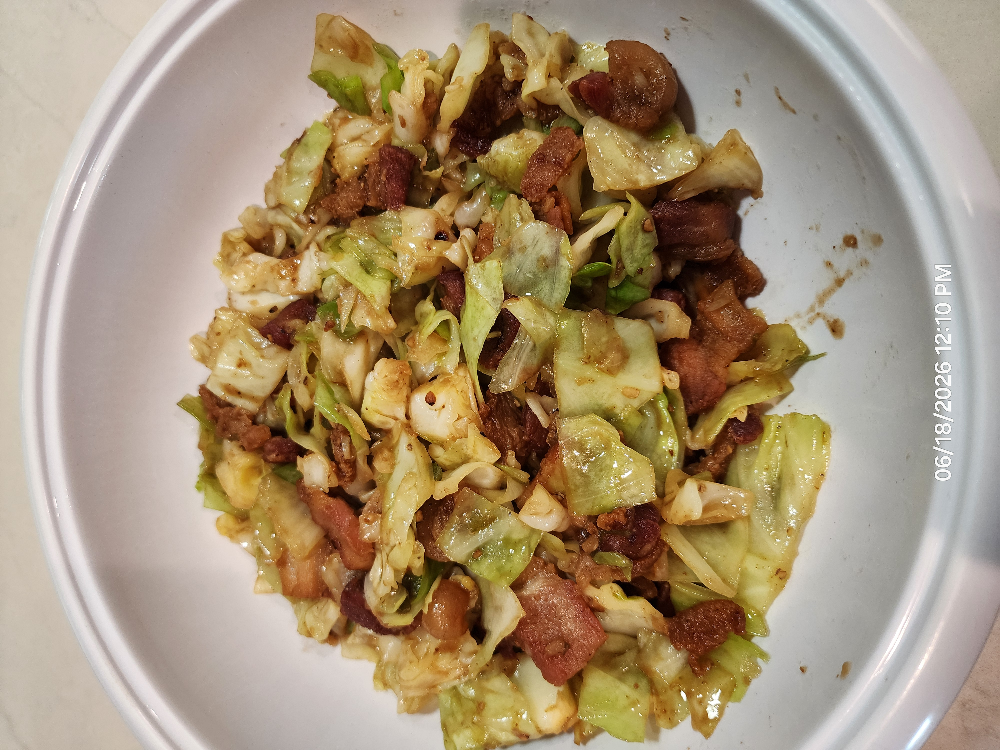

Stir-Fried Cabbage with Crispy Pork

Ingredients
- 500 g cabbage, chopped and separated
- 300 g pork belly, sliced, with top skin removed
- ½ tsp white peppercorns
- 2 Thai chili
- 2 tbs garlic
- 1 tsp shrimp paste (gapi)
- ½ tbs soy sauce
- ½ tbs fish sauce
- 1½ tbs oyster sauce
- 1 tsp sugar
- 1 tsp dark soy sauce
Directions
- Prep: Chop cabbage and separate leaves. Slice pork belly into 1" pieces after removing outer skin.
- Make Paste: Grind peppercorns, chili, garlic, and gapi into a paste.
- Render Pork: Cook pork belly with a small amount of water over medium-high heat until fat renders, then remove to a collander to drain
- Sauté: Add gapi paste and cook until fragrant, about 1 minute.
- Cook Cabbage: Add cabbage and a little water, then stir-fry until tender.
- Finish: Return the pork and add the sauces and sugar. Stir-fry until reduced to desired consistency.
- Serve: Serve with jasmine rice.
Chef's Notes
- Use white pepper sparingly, as too much can overpower the subtle salty and sweet notes of sauce.
- This recipe works with other proteins such as chicken thigh or tofu
The Gumbo Page
Michael Fritsche
mbf@fritsche.org